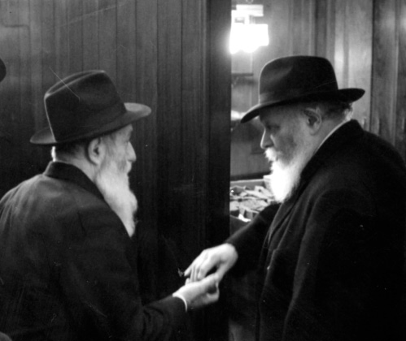
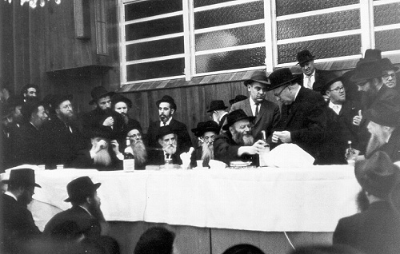

A Galus Within a Galus
R’ Shmuel Isaac Popack a”h passed away at the age of 93. He grew up in Barre, Vermont and had yechidus with the Rebbe Rayatz. The Rebbe Rayatz invited him to join his new yeshiva, Tomchei T’mimim.* After the passing of the Rebbe Rayatz, he became mekushar to the Rebbe MH”M and generously supported C

Chassidim, Jews and even non-Jews (l’havdil) visited the Popack home on President Street during the week of Shiva for R’ Shmuel Isaac Popack a”h, who passed away Motzaei Shabbos Parshas BaMidbar, Erev Shavuos at the age of 93.
R’ Shmuel Isaac is survived by his wife Miriam and his sons: R’ Yisroel Meir, shliach in Denver; R’ Yosef Yitzchok (Yossi) of the Five Towns, and his daughters: Chana Piekarski of Crown Heights; Toby Hendel of Migdal HaEmek; Chaya Rivka Feldman of Crown Heights; and Zeesy Raskin, shlucha in Vermont. He is also survived by his brothers: R’ Sholom Ber Popack of Crown Heights and R’ Yitzchak Popack of Queens.
A GALUS WITHIN A GALUS
R’ Shmuel Isaac was born in 5679/1919 in Barre, Vermont. His father, R’ Avrohom, had learned for five years in Yeshivas Tomchei T’mimim in Lubavitch, and although they lived far from a center of Judaism, he was able to instill in his children an authentic Chassidic education.
When in Lubavitch, his father had studied sh’chita and after he married he raised money for Yeshivas Tomchei T’mimim – Lubavitch. Life in Russia was very hard and in 5674, he left Russia for Eretz Yisroel via Turkey. To earn a living he worked as a shochet on the ship that sailed the Haifa-Alexandria line. It was difficult work, for he had to spend most of his time on board ship, and after a year of this, he decided to immigrate to Alexandria, Egypt. Fourteen months later, he moved on to the United States where his uncle, Mr. Wolfson lived.
When Mr. Wolfson heard that his nephew was a shochet, he arranged a job for him in a slaughterhouse. However, on the very first day, R’ Avrohom had to leave. One of the many chickens that he shechted was treif and when the boss saw the chicken cast off to the side, he angrily asked why it was discarded. When R’ Avrohom said the chicken was treif, the boss said he was fired. His comment was, “The previous shochet worked here for four years and never discarded a single chicken!”
Having no choice, he went looking for work on the Lower East Side of Manhattan where thousands of Jewish immigrants lived. Hashgacha pratis led him to meet a knowledgeable Jew who, when he heard that R’ Avrohom was a shochet, told him that the Jewish community in Barre, Vermont needed a shochet. After contacting the leaders of the k’hilla, he traveled to Barre, a place far from any vibrant Jewish center. He lived there for 26 years which he described as a galus within a galus.
Life wasn’t a bed of roses in Barre either. When a chicken was treif they did not fire him, but they did not want to pay him for treif chickens. He fought the community on this issue, because he felt such an arrangement would create a bias on his part when he would have to decide whether a chicken was kosher or treif, and this might lead him to err r”l. The matter was brought before Rabbi Slaving, rav in Burlington, who paskened in his favor.
The Jewish community in Barre was tiny and didn’t even have a minyan in the early years. In order to educate his children, he would gather his four sons who were under bar mitzva age, along with his three daughters, and he would daven like a chazan and they davened with him. In his free time, he would tell his children Midrashim and maamarei Chazal as well as stories of tzaddikim. As a Lubavitcher Chassid, he did not concern himself only with his family but also taught the other children in the community.

THE FIRST YECHIDUS
In Elul 5689/1929, R’ Shmuel Isaac had yechidus with the Rebbe Rayatz. This was when the Rebbe was visiting the United States and his father, R’ Avrohom went to New York with his sons, Shmuel Isaac and Aharon. They had yechidus before Rosh Hashanah, in the course of which the Rebbe said to the young boys: Remember that you are Chassidim from Russia, from Bobroisk (R’ Avrohom came from Bobroisk and in Lubavitch he was nicknamed Avrohom Bobroisker). You are mine!
After the yechidus, R’ Avrohom sat down with the other Chassidim who had gathered to be with the Rebbe and cried bitterly about being so far from his fellow Chassidim. He yearned for the old days and taught the Chassidim a niggun that he heard from the mashpia, R’ Shilem Kuratin. Then he reminisced about the yeshiva in Lubavitch.
R’ Avrohom kept in close touch with his fellow T’mimim in the United States and they helped him find suitable yeshivos for his sons. When R’ Shmuel Isaac was close to bar mitzva age, his father sent him to New York where he stayed with his father’s friend Bentzion Sokolik, who had also learned in Lubavitch.
Being far from home was difficult for him and a year later, he returned home. Then he went to learn in a Jewish school in Boston and there too, he was in touch with his father’s friends, fellow T’mimim in Lubavitch. He learned Gemara with Rav Zaitchik who had previously taught in the yeshiva in Lubavitch. On Shabbos he would learn Tanya with R’ Yehuda Leib Horowitz.
His father wanted to send him to Yeshiva Torah Vodaas in Brooklyn, but it was only in the summer of 1936 that he was able to arrange to send R’ Shmuel Isaac and Aharon to yeshiva. He sent a letter to his friend, R’ Yisroel Jacobson in which he wrote, “My sons, Shmuel Isaac and Aharon, traveled to yeshiva on Monday and I told them that every Motzaei Shabbos they should go to you [for him to teach them Chassidus and the darkei ha’chassidus] since learning without yiras Shamayim is nothing. Try and make Chassidim out of them!”
At the end of 5699, he was registered to learn in Yeshivas Tiferes Yerushalayim (MTJ) under the leadership of the gaon, Rabbi Moshe Feinstein z”l. He learned there for half a year until the Rebbe Rayatz arrived in New York and opened his own yeshiva.
THE SECOND YECHIDUS
When the Rebbe Rayatz descended the gangplank on 9 Adar 5700/1940, R’ Shmuel Isaac and his father were there to welcome him. The Rebbe went from there to the Greystone hotel where he lived for a period of time. It was in this hotel that R’ Shmuel Isaac and his father had their second yechidus with the Rebbe. R’ Shmuel Isaac later recounted what took place in that yechidus:
“Two things happened in this yechidus. First, the Rebbe invited me to join his yeshiva. I was the tenth or eleventh bachur in the first group of bachurim with which Tomchei T’mimim in America was started. The Rebbe held out his hand and I, against the rules, extended my hand, something which only non-Chassidim did. My father, who knew that it was the practice among Chassidim not to shake the Rebbe’s hand, immediately reacted by saying: I want my children to remain Chassidim.
“Second, my father said to the Rebbe that he was in galus in Vermont for 26 years already and he wanted to move to New York to be close to the Rebbe. The Rebbe told him: You cannot leave a city without a shomer Shabbos. My father was the only shomer Shabbos Jew in the area. It took my father an entire year to ensure that his student would be shomer Shabbos and only then did the Rebbe allow him to move to Crown Heights.”
SHLICHUS TO FARMS
Upon his arrival, the Rebbe Rayatz immediately announced that America is no different and he founded yeshivos and day schools. Under the auspices of Machne Israel he established a special department for Jewish farmers, which supplied them with their religious needs, books etc. and even helped arrange chinuch for their children that met their special needs.
After the Popack family moved to Crown Heights, the Rebbe asked R’ Avrohom to be his peripatetic shliach to farmers. At the beginning of the week he would make the rounds of farms in nearby cities. He put t’fillin on with the farmers, put up mezuzos, and spread Judaism and Chassidus to the best of his ability.
R’ Avrohom would go home for weekends and every Friday afternoon he had yechidus with the Rebbe who wanted a full report of his week’s activities. The Rebbe so cherished his weekly meetings with R’ Avrohom that he once said to his secretary, R’ Eliyahu Simpson, that these meetings were the moments from which he had the most nachas the entire week.
Later on, R’ Avrohom got a position as a maggid shiur in Yeshivas Tomchei T’mimim and was also appointed as the second gabbai along with his good friend, R’ Yochanan Gordon a”h. He lived in Crown Heights for the rest of his life until his passing on 19 Iyar 1971, surrounded by his descendants, all of them Chassidim and yerei Shamayim.
MILITARY DRAFT
In 5702, the Rebbe called for R’ Shmuel Isaac, who was learning in Tomchei T’mimim, and asked him whether he would agree to fulfill his request. Of course, R’ Shmuel Isaac immediately answered in the affirmative. Then the Rebbe asked him to manage the building of 770 which entailed collecting the rent from the tenants – Rashag who lived on the third floor, R’ Moshe Leib Rodstein who paid for the secretariat, and the Rebbe MH”M who paid the expenses of Merkos L’Inyanei Chinuch. With the money that he received, he had to pay the building’s expenses such as the gas and electric bills. The Rebbe told him he was “drafting” him for a year.
R’ Shmuel Isaac threw himself into his new job and after calculating the income versus the many expenses, he saw that they were operating at a deficit every month and that this would grow with time. He went to the Rebbe Rayatz and told him there wasn’t enough money for the building’s needs. The Rebbe told him, “In that case, raise the rent by 10%; my rent too.”
After a brief period, R’ Shmuel Isaac understood why the Rebbe had used the term “drafted.” This is what happened:
For many years, American yeshiva students received a deferment from the draft, but during World War II the law was changed and draft notices were also sent to yeshiva students. Under pressure from the Orthodox Jewish leadership, who were afraid that yeshivos would be closed down, the government capitulated and said that only a certain quota of students would be drafted from every yeshiva.
The ten students of Yeshivas Tomchei T’mimim received draft notices, including R’ Shmuel Isaac. They submitted their names to the Rebbe in order to receive his bracha that they be exempted from serving.
The night before they had to present themselves at the draft office, the ten talmidim sat down to learn in the zal. In the morning, after davening Shacharis, they went to the draft office in Manhattan. When they left 770, they noticed the Rebbe Rayatz standing near the window which was above the entrance to 770, and whispering a t’filla.
When the bachurim arrived at the draft office, they noticed that one of the clerks was Jewish (a former talmid of Yeshivas R’ Yitzchok Elchanan). They went in to see this clerk, one after the other, and were given their exemptions. To some extent, this was expected since they looked unusual – young boys with beards who dressed oddly. Their appearance broadcast that there was something the matter with them.
The Rebbe remained standing there to say T’hillim and even when he was asked by his household to come and eat breakfast, he continued to recite T’hillim. The Rebbe asked to be informed what happened with the bachurim. Every bachur who received an exemption hurried to call 770 so the Rebbe would be told.
The last one on line was R’ Shmuel Isaac. It was lunchtime and the Jewish clerk left the office to eat lunch. R’ Shmuel Isaac, who did not have a beard yet and looked relatively “normal,” knew that if he fell into the hands of a gentile, he did not have a chance at an exemption. He quaked in fear.
In front of him on line stood a burly gentile who seemed to want to be drafted. He looked happy to enter the examination room. The examination usually took a few minutes, but this time it was longer. It turned out that the examiner was from the same town as he and the two of them got into a long conversation about their childhood experiences.
Three quarters of an hour went by and in the meantime, the Jewish clerk returned. When he saw R’ Shmuel Isaac standing there, he turned to the gentile clerk and said, “You have no idea what a terrific lunch I just ate. If you want something really delicious, go to the restaurant right now.”
He told him the name of the restaurant and gave him the address and said, “There is only one person left on line. I’ll take care of him and you go and eat lunch.”
The gentile clerk was happy to oblige. He quickly finished filling out the forms for the young gentile and left the office. R’ Shmuel Isaac went over to the Jewish clerk and within two minutes he was outside with his permanent exemption. He quickly called 770 to announce that he had also been exempted and the Rebbe was informed of the good news. Only then, did the Rebbe stop saying T’hillim and return to his room.
When R’ Shmuel Isaac returned to 770, his friends told him excitedly that the Rebbe had remained at the window saying T’hillim another 45 minutes just for him, and every ten minutes he sent someone to check whether Shmuel Isaac already received his exemption.
R’ Shmuel Isaac was very moved and then he recalled the expression the Rebbe had used a few months earlier, “I am drafting you.” Now he understood that the Rebbe had preceded the “blow with the cure,” and by enlisting his aid had exempted him from the military.
QUICK BIRTH
R’ Shmuel Isaac married Miriam Altein, the sister of Mordechai Altein, on Sunday, 7 Shevat 5705. After the wedding he worked for Yeshivas Tomchei T’mimim and was a mekurav of Beis Rebbi. He participated several times in the Yom Tov meals with the Rebbe Rayatz.
On 9 Sivan 5710, his wife went into labor and he went with her to the hospital. He passed by 770 and went to the Rebbe MH”M’s room. The Rebbe had still not accepted the Chabad leadership after the passing of his father-in-law. R’ Shmuel Isaac told the Rebbe that with previous births, he had received the bracha of the Rebbe Rayatz and now he wanted his bracha. The Rebbe blessed him and he continued to the hospital.
Some time later, he told the Rebbe with a smile that when he received a bracha from the Rebbe Rayatz, his wife had given birth within twenty minutes; after the Rebbe’s bracha, it was five hours before his wife gave birth. The Rebbe looked serious and did not react. The next time his wife went into labor, the birth was so quick that they barely made it to the hospital.
HE RAISED HIS HAND AND BECAME WEALTHY
At the Purim farbrengen 5715/1955, the Rebbe spoke about the test of poverty versus the test of wealth and said it was preferable to be wealthy and to have to withstand that test. The Rebbe then said that in America everything is put up for a vote, and therefore, those who were willing to accept great wealth from Hashem and did not care that they would have to work hard to fight the Yetzer Hara , should raise their right hand with a whole heart.
When the Rebbe saw that only a few people were taking him seriously (not regarding it as Purim humor) and raised their hands, he said with obvious disappointment, “And then they come and complain about how come such-and-such isn’t just so, but then when there is an auspicious moment, they behave with Chassidic foolishness.
The story goes that R’ Shmuel Isaac was one of the few who raised their hand and his mazal began to shine. As the years went on, he became one of the wealthiest people in Chabad.
GIVE THE REBBE ALL THE MONEY IN THE WALLET
On 24 Teves 5723, 150 years since the passing of the Alter Rebbe, the Rebbe farbrenged three times in a row, in the course of which he said tz’daka should be given in multiples of 150. At a sudden farbrengen on Motzaei Shabbos, the Rebbe spoke about the special quality of tz’daka, when you take everything in your pocket and give it away.
The Rebbe said this was the practice of the Baal Shem Tov who did not want money to remain in his home overnight. At the end of the sicha, the Rebbe told everyone present to empty their pockets and give the money to tz’daka. The Rebbe recounted that at Chassidic farbrengens in days past, when they would demand that the participants donate to a certain cause, they would use the Russian gentile derogatory expression, “Zhid, davoi grushi” (Jew, bring the money).
R’ Shmuel Isaac was not present at this farbrengen but the next morning, he met R’ Meir Plotkin who told him what the Rebbe said the night before. R’ Shmuel Isaac did not think twice. He went to the secretariat, took out his wallet with all the cash and asked the secretaries to give the Rebbe all the money he had on him.
THE REBBE’S THOUGHT AFFECTED HIM
In the 50’s, R’ Shmuel Isaac started a rent-a-car company. He supplied the Rebbe with a car for his trips to the Ohel. At a farbrengen on Motzaei Yud Shevat 5724, the Rebbe told his driver, R’ Krinsky, to say l’chaim and to sing “Ach Lei’Lokim Domi Nafshi,” and then he said, “In addition to the previous person, who drives to the tziyun (lit. marker, i.e. gravesite) and from the tziyun of the baal hilula (the Rebbe Rayatz), in order to drive you need a wagon and a chariot, and for this there is someone who provides the wagons and chariots. As such, he too should say l’chaim and be a ‘singer’ and sing the previous song.”
The Rebbe said he should say l’chaim in abundance, saying that this affected parnasa, and then he said, “For others, even my words, and even several times, is not effective; as for him (R’ Shmuel Isaac), thought alone was effective, although he probably did not know that I was thinking about him.
The Rebbe added, “I am referring to growing a beard” (for it was at this time that R’ Shmuel Isaac began growing a beard).
SET TIMES FOR LEARNING TORAH
R’ Shmuel Isaac lived in Crown Heights from the day he married until his final day. In addition to his busy real estate business, he had set times to learn Torah. He would start his day early in the morning by learning with R’ Shneur Zalman Gurary in the shul on Lefferts. Only after three hours of learning and davening did he go off to work. Later in the day, he learned with his son-in-law, R’ Efraim Piekarski.
R’ Shmuel Isaac was mekushar to the Rebbe and supported Chabad mosdos in and out of Crown Heights. For many years, he paid the heating costs of Yeshivas Oholei Torah, and he donated an apartment building to serve as a dormitory for the yeshiva. He donated large sums of money to the Chabad yeshiva in Migdal HaEmek and when they wanted to inscribe his name on the building, he refused and asked that his donations be kept anonymous.
Many Lubavitchers who wanted to buy a home in Crown Heights received monetary aid from him as well as advice on how to deal with the banks. There were quite a few Lubavitchers who, when they went into business, were told by the Rebbe to consult with R’ Shmuel Isaac and he gave of his wise advice and was happy to do so.
R’ Shmuel Isaac’s joie de vivre was legendary. When he was asked how he was, he always answered, “Good, better than yesterday.” His eternal optimism did not leave him even when he was sick. And although he suffered greatly at the end of his life, he did not complain about his terrible pain and said he accepted it all with love.
Before he died, he spoke to his family with astonishing calmness about the fact that he was soon going to be leaving this world and moving on to Olam Haba where he would connect with the light of Hashem. In the final moments of his life he said to his family, “You should know that all the honor and money that a person receives in this world do not remain with him. The most important thing is your bond with G-d and that is what you must invest in.”
His funeral took place on Tuesday, Isru Chag Shavuos and passed by 770.
Avremele Rainitz. "A Galus Within a Galus." Beis Moshiach, no. 837 (June 12, 2012).